Oi, eu sou o Fernando Mateus. E este é o meu passaporte.
7 países, 4 continentes e uma curiosidade que começou num avião para Maceió.

Como tudo começou
Costumo viver focado no presente e no futuro. Mas, quando olho para trás, cada fase da minha vida explica um pedaço de quem eu sou hoje.
-
0 a 7 anos
O primeiro voo
Minha primeira viagem de avião foi para Maceió. Do calor e das praias lotadas eu mal lembro. Do voo, lembro de tudo.
-
8 a 14 anos
O mundo dentro do computador
Aos 11 anos descobri o World of Warcraft e passei a conversar com gente de todos os cantos do planeta. O inglês que minha mãe me ensinou em casa virou ferramenta de verdade, e ali nasceu a vontade de conhecer outras culturas e outras línguas.
-
14 a 21 anos
O deserto e os idiomas
No ensino médio, passei três meses trabalhando numa agência de turismo no deserto do Atacama. Voltei falando espanhol, com o inglês melhor e com amigos do mundo inteiro. Em paralelo, cinco anos de alemão me apresentaram a cultura e a história de outro país.
-
21 a 26 anos
O mundo de verdade
Conheci a Katherine, que ama viajar e não me deixa perder uma oportunidade. Com ela, aceitei todas as que apareceram: Argentina, Espanha, Portugal, Gibraltar, Moçambique e Estados Unidos.
Por que eu viajo
Viajo para entender por que as pessoas vivem do jeito que vivem. Cada lugar me ensinou alguma coisa: um idioma, um jeito de trabalhar, um motivo para valorizar o próprio esforço. Este site é o meu jeito de guardar e compartilhar esses aprendizados.
Países
Clique num país para ler a história da viagem (precisa entrar na conta).
- Carregando os países...
Crie sua conta e viaje comigo
-

Sobre mim
As fotos e as histórias de cada viagem.
-

Dashboard
Quanto custa cada destino no seu estilo de viagem (aventura, low cost ou exclusiva), a melhor época e o destino mais barato.
-

Calculadora
Monte o orçamento da sua viagem saindo de São Paulo.
-

Jogo
Corra pelos países, ganhe carimbos no passaporte e libere novas cores para o site.